Operating Documentation
Direction 5193574-800, Rev# 22
LightSpeed 7.X Service Methods
Module Version 2.0, Version Date 6/28/11
Operating Documentation |
| NOTE: | Includes both GOC6 and GOC6.5 |
Locate and unpack the two monitors from the lean cart (see Illustration 1).
Carefully place the monitors on the console desktop.
Locate and unpack the media drive tower.
Place the media tower on the console desktop.
Illustration 1: Lean Cart Layout

Illustration 2: Global Console tabletop component placement (actual components may vary in color and configuration)
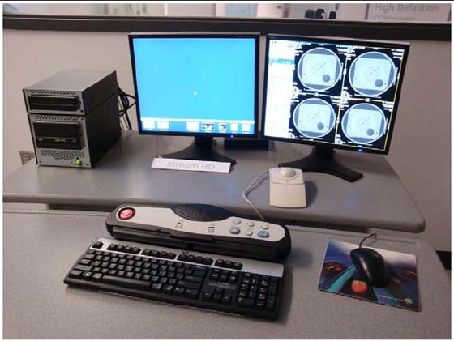
| NOTE: | Even if the components look different, the connections are the same. |
Route the keyboard cable under the SCIM, as shown in Illustration 3.
Illustration 3: SCIM control with keyboard cable routed through SCIM (actual components may vary in color and style)

| ||||
| Potential for equipment damage Never connect a mouse or keyboard with the host computer powered ON. Doing so can destroy components within the host computer. | ||||
The SCIM, keyboard, trackball, mouse, and barcode reader all have USB connectors that connect in the rear bulkhead on the console as shown in Illustration 4.
The SCIM, keyboard, mouse, and trackball colors may be different than those shown in this direction. Their installation, connection, and operation is the same.
The Media Tower connects using three USB cables in place of the SCSI cable. The optional MOD drive is connected with a USB cable, and can be placed on top of the media tower for easy access.
Power cords for all desktop components connect directly to the left rear power bulkhead. All power cables are shipped with the console. Desktop components cables cannot be extended or replaced.
| NOTE: | Return all shipping boxes and packing materials, including unused monitor cables. Place this material back on the lean cart. All installation packaging should be placed on the cart and returned with the dollies. |
Illustration 4: Global Console Front Bulkhead, showing mouse, keyboard, barcode reader and trackball connections
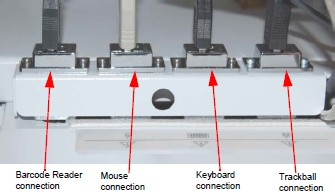
Connect the SCIM cable to the SCIM as shown in Illustration 5. (Note the cable routing.)
Illustration 5: SCIM bottom, showing cables and keyboard mounting bracket

Make sure the SCIM connector fits snugly. Some plastic molding may need to be removed to allow the cable to fit properly.
Illustration 6: SCIM Connector Area
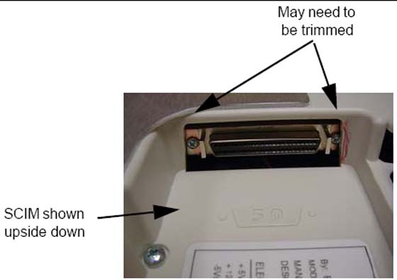
Select and install the proper keyboard overlay for your system: (1) with tilt or (2) without tilt.
Verify that none of the buttons get caught and stuck under the overlay. Pay close attention to the prescribed tilt button on systems with the tilt feature.
The keyboard should attach to the SCIM using the supplied Velcro strip and fit snugly against the SCIM when finished, as shown in Illustration 3 and Illustration 7.
Illustration 7: SCIM connected to the keyboard with the US English tilt overlay installed (actual components may vary in color and style)
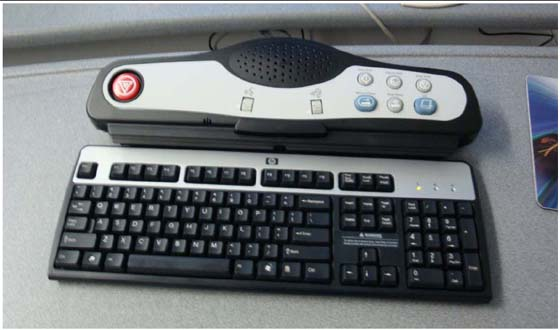
Illustration 8: Peripheral Media Tower Connections shown with optional MOD Drive 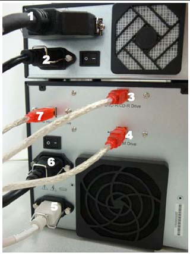 | Dual-Bay Peripheral Media Tower | Single-Bay Peripheral Media Tower |
| 1. SCSI cable MOD Drive to Console | 1. SCSI cable MOD Drive to Console | |
| 2. Power into the MOD Drive | 2. Power into the MOD Drive | |
| 3. DVD-R/CD-R Drive | 3. DVD Multi-Media | |
| 4. DVD-RAM Drive | 4. Not used. | |
| 5. Power into the Media Tower | 5. Power into the Media Tower | |
| 6. Power out to the MOD Drive | 6. Power out to the MOD Drive | |
| 7. External Hard Disk Drive | 7. External Hard Disk Drive |
Connect the three USB cables to the rear of the media tower. Each USB Cable is labeled, plug the labeled cable end into the correct connector.
| NOTE: | The cables are included with the console. |
Connect the power cable to the rear of the media tower.
| NOTE: | Includes both GOC6 and GOC6.5 |
The power and SCSI cables are supplied with the option.
Mount MOD drive on top of the media tower.
Connect the short power cable from the media tower to the MOD drive.
Remove the GOC6 rear cover to gain access to the HP.
Locate Channel 1 on the HP.
Connect the SCSI cable to channel 1 and route the cable so that is comes out of the top of the console.
Reinstall the console rear cover and connect the SCSI to the rear of the mod drive.
With the monitor and computer switched off, connect the video signal cable to the monitor’s video input.
| ||||
| Equipment damage possible Do not touch the video signal cable connector pins as this might bend them. When connecting the video signal cable, check the alignment of the HD15 connector. Do not force the connector in the wrong way, otherwise the pins might bend. | ||||
Connect the following:
SCIM:
SCSI cable from the console
Template overlay (Illustration 7)
Keyboard (see Illustration 7)
Route cable under the desk top
Scan Monitor:
Video cable from console
Power cable J2
Route through the cable keeper
Display Monitor:
Video cable from console
Power cable J3
Route through the cable keeper
Illustration 9: Connecting the LCD Monitor
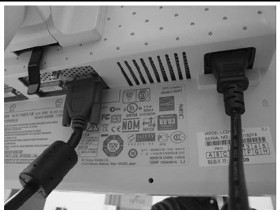
Illustration 10: Cable Routing and Keeper
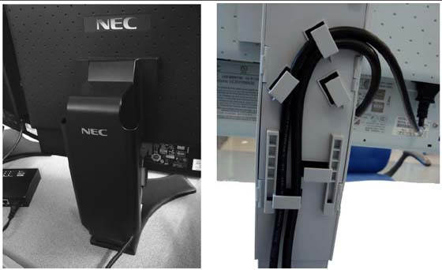
| ||||
| Console power is two-phase power. Only used assigned outlets. | ||||
Connect the console power cable to the console power panel.
Connect console component power cords as listed in Table 1. Plug LAN cables into the rear bulkhead on the console as shown in Illustration 12.
Table 1: Console Component Connections
| LAN Cables | Signal Cables | Power Cables |
J26 Hospital Network | J20 Cable (Gantry) #101 | J1 208 VAC Power, Run #53 |
J27 TGPU LAN, #102 | J25 Dual Fiber DIP, #102 | RUN #056 #2 Ground |
J30 HD Cardiac (EKG) |
| NOTE: | The DIP signal cable is keyed to fit only one way. The console is not shipped with all external power cables connected to their assigned power slots. Connect the monitor and media tower power cables as shown in Illustration 12. |
Plug cables into rear bulkhead on console.
Illustration 11: GOC6 Console Rear Bulkhead

System cable connections are located on the rear of the GOC6 console. Connect as shown in Illustration 12 below.
Illustration 12: GOC6 Series Console Power Connections
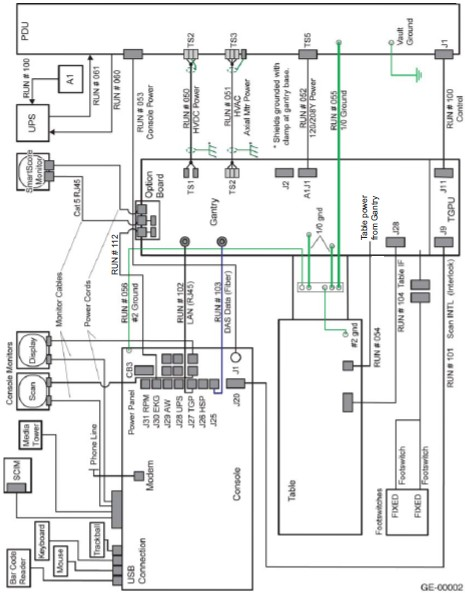
Active static mat and ground wrist strap
| ||||
| ESD can damage hard drives. Use proper ESD precautions when handling hard drives. | ||||
Illustration 13: ESD Mat
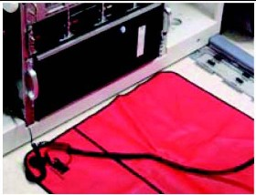
Locate the four boxes on the lean cart containing the drives, and place near the console.
Illustration 14: Hard Drive Installation
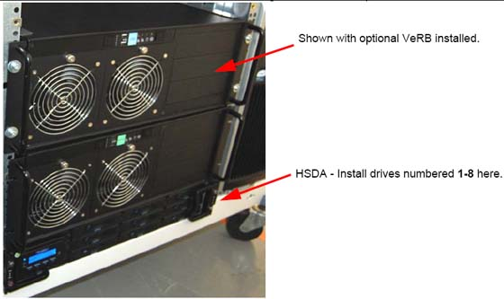
On each side of drive rack are brackets blocking some of the tray access. Slide the latch to release side bracket. Press the blue button on the front to open the drive tray front cover.
Illustration 15: Releasing the drive trays
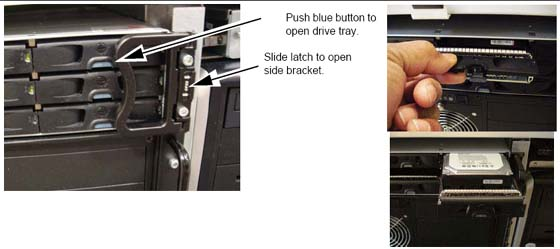
With the ESD mat connected and the wrist strap on, remove each drive from the cardboard shipping box. Remove each drive from the static bag.
Notice each drive is labeled with a number. This number corresponds to the drive tray location for installation.
Illustration 16: HSDA Drive slots replication
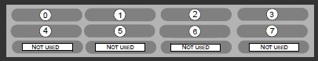
| NOTE: | Some drives bays have blank trays installed. Do not remove filler plugs or install drives in these four slots. |
Use the Illustration as reference for drive location, install the 8 drives into the corresponding drive rack.
Insert drive into tray and push drive firmly until it "clicks" into place. Repeat for each drive.
| NOTE: | If the drive fails to click into place, remove the drive by pushing the blue button to raise the door, and then restart the installation process. |
Close the door and the side brackets to secure the drives after installation.
Replace all static bags into the boxes and return the boxes to the lean cart.
At the front of the console, remove the Rack Blank Panel immediately above the DIG Computer. See Illustration 17 (A).
| NOTE: | Save the four (4) 5mm socket cap bolts and washers. |
The Rack Blank Panel is no longer needed, dispose of properly.
Illustration 17: Rack Blank Panel
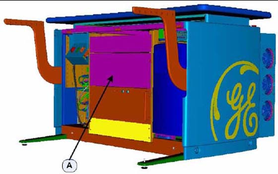
Remove the VeRB Computer from the shipping container and check that all packaging material has been removed and not blocking intake fans or ventilation grills on the chassis.
Lift and slide the computer on to the two rack guides already installed in the console rack.
Push the computer fully into the console rack until it is flush with the front of the console rack.
| NOTE: | If necessary, utilize lifting tools found in the CT Service Manual Safety chapter. |
Mount the computer to the console rack utilizing the four (4) 5mm socket cap bolts and washers removed from step 1 of this procedure. Torque to 4 N-m.
On the backside of the console, plug in the computer power cable (p/n 5314704) into the computer outlet. See (C) in Illustration 18. Label this end of the power cord "VeRB" using supplied cable labels (p/n 5316747-3) Also check, and if necessary turn ON the computer power switch. See (D) in Illustration 18.
Illustration 18: VeRB Computer Connections
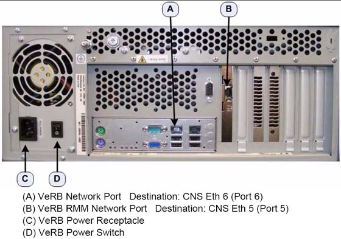
Illustration 19: Power cable tray (A) and Network cable tray (B)
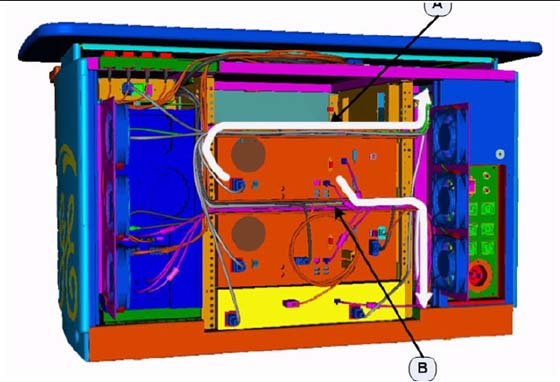
Run the power cable along the cable tray, directly above the VeRB computer to the right side. See Illustration 19.
Using the cable labels, place "VeRB J13" label on other end of the power cord. Insert this end of the computer power cable into the console cabinet, along the right side top of the rack, to the Power Distribution Box. See Illustration 19.
Plug the newly labeled end of the power cord into the J13 on the Power Distribution Box. See Illustration 20.
Illustration 20: Power Distribution Box Connections (J13)
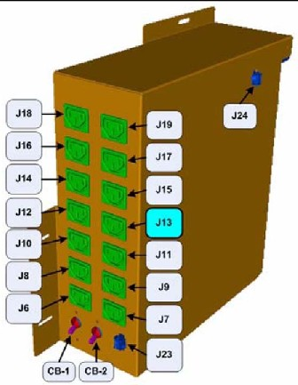
On the backside of the console, plug in the VeRB computer network cable (p/n 5313765) into VeRB network port (A). See Illustration 18. Place "VeRB Eth 6" label on this end of the network cable.
On the backside of the console, plug the other VeRB computer network cable (p/n 5313765) into the VeRB RMM network port (B). See Illustration 18. Place "VeRB RMM Eth 5" label on this end of the network cable.
Run the network cables along the cable tray, directly below the VeRB Computer, to the right side. See Illustration 19.
Label the other end of the "VeRB Eth 6" cable "Port 6". Insert this end of network cable into the console cabinet, along right side bottom of the rack, to the Console Network Switch (CNS). See Illustration 19 for routing.
Label the other end of the "VeRB RMM Eth 5" cable "Port 5". Insert this end of the computer network cable into the console cabinet, along the right side bottom of the rack, to the Console Network Switch (CNS) See Illustration 19 for routing.
Connect the VeRB Network cables into their respective ports on the CNS. See Illustration 21.
Illustration 21: VeRB Network Cables Connections on Console Network Switch
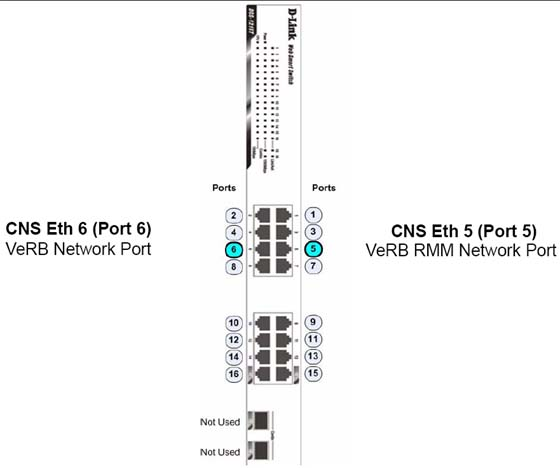
Using several tie wraps, secure the VeRB power and network cables to the cable trays where they have been routed.
Attach the VeRB "Modified By" kit plates (p/n 5335238) along side the present Rating Plates in the following locations. See Illustration 22.
(A) Backside of Console, near Rear Bulkhead Panel
(B) Inside the console near Power Distribution Box
Illustration 22: Modified By Kit locations and label example
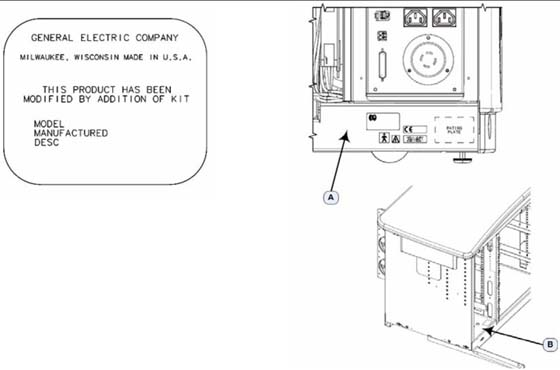
Locate the barcode reader box on the lean cart options section.
Connect the USB cable to port USB A on the back of the console
Dress any excess cable and place under the monitor desktop.